文字
背景
行間


カテゴリ:佐倉アクティブ
 サイエンス・ダイアログ講座第2回
サイエンス・ダイアログ講座第2回
サイエンス・ダイアログとは、日本学術振興会(JSPS)が実施している「外国人特別研究員事業」を活用し、
来日している外国人研究者(フェロー)を講師として招き、自身の研究や出身国に関する講義を
英語で行うことにより、科学への興味・関心を高めるとともに、国際理解を深めるというものです。
講師は東京大学農学生命科学研究科応用生命科学専攻土壌圏科学研究室の先生です。
参加生徒の事後アンケートには
「事前学習で専門用語を学んでいたのである程度理解できた。」
「聞き取れたとき、自分の知識と結びついたとき、とても嬉しかった。」
「土壌微生物学はおもしろいと思った。生物の学習意欲が高まった。」
などの意見がありました。
サイエンス・ダイアログについての詳細は以下のリンクから日本学術振興会のホームページでご覧ください。
https://www.jsps.go.jp/j-sdialogue/


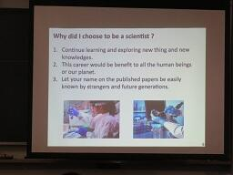

 佐倉アクティブ「ゾムツール(立体図形)講座」
佐倉アクティブ「ゾムツール(立体図形)講座」
東邦大学理学部情報科学科教授の並木誠先生に講師をしていただきました。
1、2年生対象で11月19日(土)に本校多目的室2で開講され、普通科2名、理数科4名の計6名が参加しました。
ゾムツールとは、棒状のパーツと球状のパーツを組み合わせて立体物を構築する玩具のことです。
前半は多面体の数学的性質と展開図に関する講義を受けました。
ひし形だけでできた多面体や、四角形・六角形・八角形の組合せでできた多面体などの存在には驚きましたが、
さらにそれらの多面体の展開図は頭の中では想像しきれない難しいものでした。
多面体から展開図を作るための条件や、展開図に関する未解決問題についても考えさせられました。
その後、回転する多面体の作成実習を行いました。
展開図が描かれた紙を切り貼りしていくと、ある文字列ができあがるように永久に回転させられる立体図形が完成しました。
後半はゾムツールを使って多面体の数学的性質について考察しました。
次週行われる講座第2回の準備のために、基本的な多角形や多面体を作成し、
正多面体を切断したときの断面の形状や、
オイラーの多面体定理が成り立っていることを確認しました。
「ゾムツール(立体図形)講座」第2回は11月26日(土)に東邦大学で開講される予定です。
 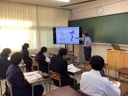
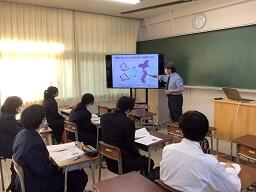

 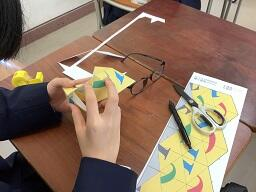
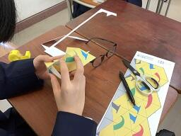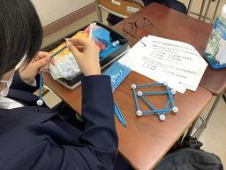 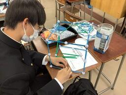
SSH通信No.9
SSH通信No.9を発行しました。
内容はSSH講座「気付く・探る・考える」と伊豆大島徹底Fieldworkについてです。
ぜひご覧ください。
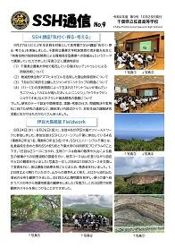
過去のSSH通信一覧は以下のリンクからご覧ください。
SSH通信No.9
佐倉アクティブ「チバニアンってなんだ？」事前学習
11月5日(土)に1年生普通科2名、理数科5名、計7名は養老渓谷周辺でフィールドワークを実施予定です。
10月24日(月)の放課後にフィールドワークを行うための事前学習会を行いました。
まずフィールドワークに行くための準備や、チバニアンに関する基礎知識を仕入れるための講義が行われました。
フィールドワークをするエリアは天然記念物に指定されており、採掘することができないため、
石などに触れて指先の感覚だけで砂岩か泥岩かを判別できるように、各自紙やすりを使って粒度表を作成しました。
その後、銚子方面でとれた石に触れ、粒度表と比較して石がどの種類に属しているのか判別し、
その石がとれた地域の特徴について分析をしました。
この講座に参加する生徒は全員SSH国内サイエンスツアー(内浦山野外実習)にも参加しており、
フィールドワークや千葉県の地層に興味を持った生徒たちが集まっています。
 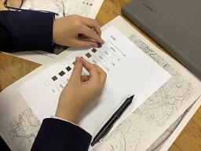
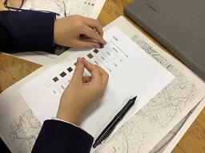

つくば市内研究施設訪問研修
午前は高エネルギー加速器研究機構を訪問し、光速に近いところまで電子を加速させエネルギーを取り出す実験施設や、宇宙誕生の謎を解明するための実験施設の見学を行いました。また、参加生徒全員で協力して空から降ってきている素粒子の通り道を観測やデータの集計も行いました。
物理・化学コースの生徒は物質・材料研究機構を訪問し、様々な新素材を見せてもらい、銀やチタン、タングステンなどの１０種類の金属を、生徒たちの知識と感覚を頼りに判別しました。
ＳＳＨ通信のNo.2にも今回の内容を載せますので、詳しくはそちらをご覧ください。
 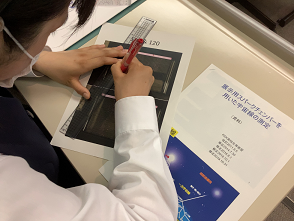
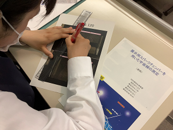SSH講座「宇宙に生命の起源を探る」
令和4年2月8日㈫、NPO法人科学技術振興のための教育改革支援計画から横浜国立大学名誉教授 小林憲正先生をお招きして、ＳＳＨ講座が開催され、理数科２年生が参加しました。講座では、「宇宙に生命の起源を探る」をテーマに宇宙生物学（アストロバイオロジー）の立場から「私たち（地球人）は、どのようにして誕生したのか？」、「地球以外にも生物はいるのか？」、「私たちは、この先どうなるのか？」について考えました。その中で、地球における生命の起源の解明をアミノ酸のような生体分子がどのようにして誕生したかを探る方法やさまざまな模擬実験や隕石の分析から得られているアミノ酸の生成に関する知見も学びました。また、分子模型でアミノ酸の鏡像異性体（エナンチオマー）の関係や円偏光板によるコガネムシの翅の観察をしました。


SSH国内サイエンスツアー第２日
9時00分に宿を出発し、斜面林での森林調査（植生調査）に向かいました。コドラード法により、各班で選んだ斜面に区画を設置し、区画内側の植物を座標で記録し、樹高を測定、樹冠投影図作成、胸高直径の計測、樹種の同定などを行い植生断面図にまとめました。その後、奥谷林道ハイキングコースで植物分類実習を行いました。１泊２日の研修でしたが、天候にも恵まれ、感染症対策も十分に行なわれ、大変有意義な研修でした。
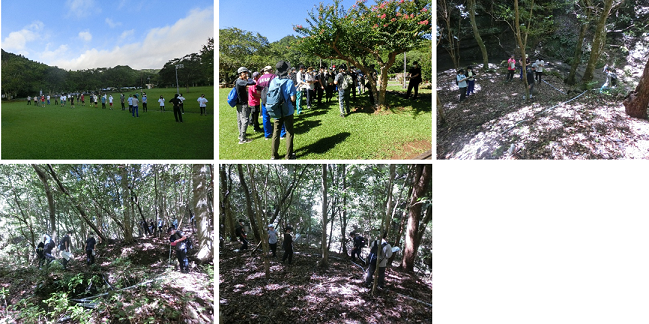
SSH講座「チバニアンってなんだ？」
８月６日（金）ＳＳＨ講座「チバニアンってなんだ！」の一環で、市原市養老川流域を中心とした巡検に行ってきました。１年生６名、２年生９名が参加し、コロナ感染対策を徹底しつつ、現地で地層を確認しながら、そこに刻まれた地球環境の変遷について意欲的に学ぶことができました。また、ハンマー片手に化石採集をした際、見つけた物について担当教員に熱心に質問する姿は、旺盛な好奇心に溢れていました。現地を歩くことによって地形の起伏も体感でき、実り多い巡検となりました。 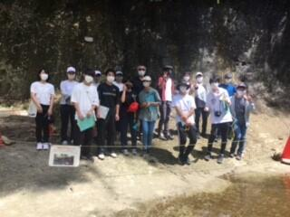
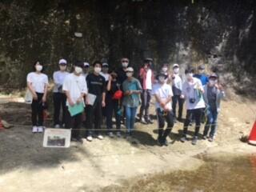
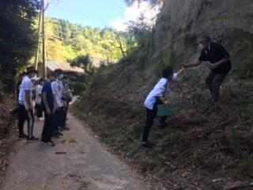

令和３年度 SSH講座 ㈱常磐植物化学研究所講座

第３回 SSH徹底探究基礎講座
11月29日(日)船橋高校にて、SSH徹底探究基礎講座「色と濃度の関係の研究」、「画像解析ソフトを用いた天文実習」、「簡易分光器の制作と光の観察」、「水質とその調査方法について」４講座同時展開で講座が実施されました。佐倉、船橋、柏、長生、木更津、市立千葉高校が参加しており、みな協力しあって課題を解決していました。

 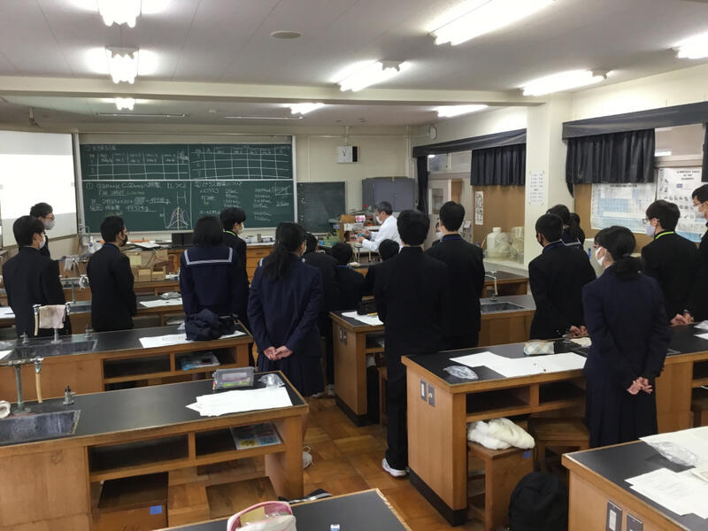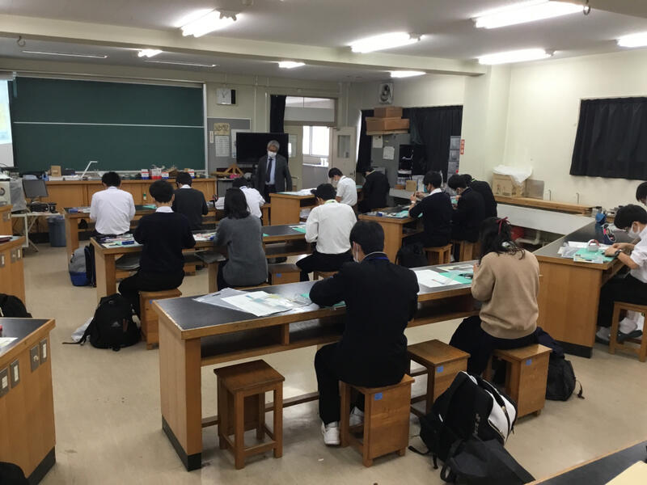
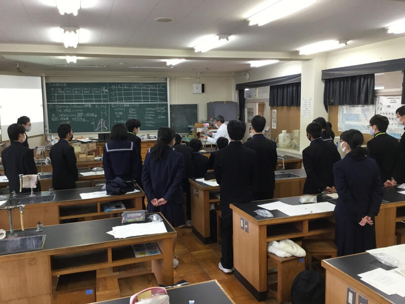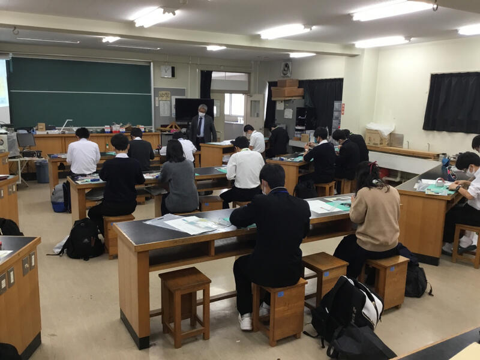
SSH東邦大学講座「似て非なる物質の不思議」
令和２年１１月１９日（木）、東邦大学理学部化学科から桑原俊介先生をお招きして、ＳＳＨ東邦大学講座が開催され、理数科１年生３９名が参加しました。講座では、柑橘類に含まれ、発泡スチロールを溶かすことでも知られている「リモネン」を題材に「似て非なる物質の不思議」というテーマで旋光性や鏡像異性体についての講義と、「簡易旋光度測定器」を作製し、キラルな分子である「リモネン」２種類とキラルでない分子である「クロロホルム」の旋光角を測定し、比旋光度を求めました。
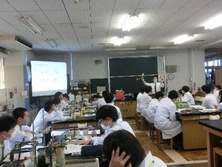 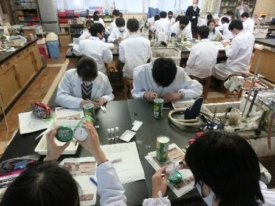
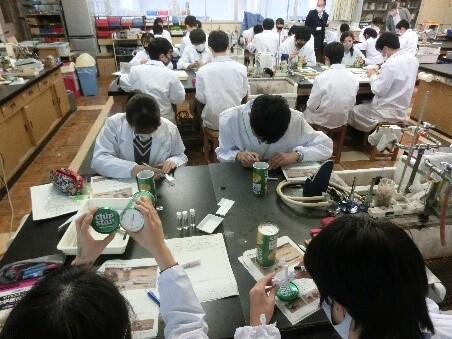 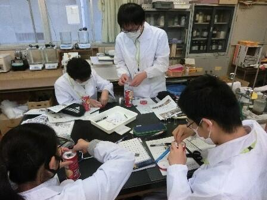
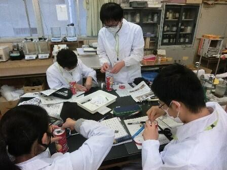 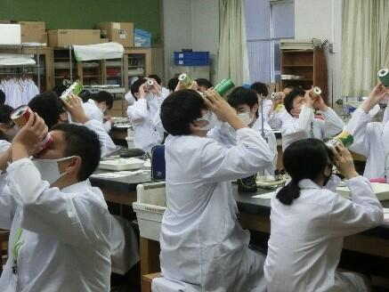
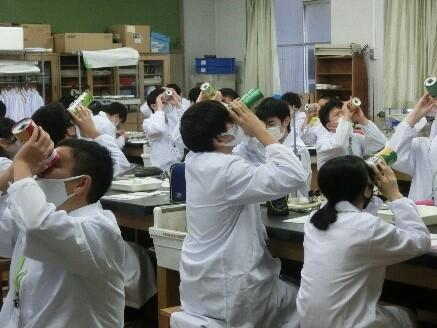

徹底 Field Work 講座


 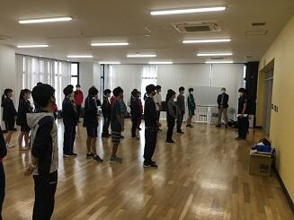
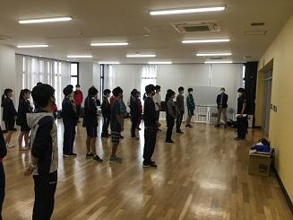
徹底探究講座 「徹底探究スタート講座」
徹底探究講座『社会・学術への貢献』
８月１０日(月)千葉県立船橋高等学校にて、スキルアッププログラム 徹底探究講座「社会・学術への貢献」が実施されました。参加生徒はSSHコンソーシアム千葉２年次参加生です。午前は、カードゲームを通し、SDGs〜持続可能な開発目標〜について考えました。午後は、学術への貢献を意識した研究の条件(意義・新規性・実現可能性)を学び、今後自分自身の課題研究で意識してくれると思います。
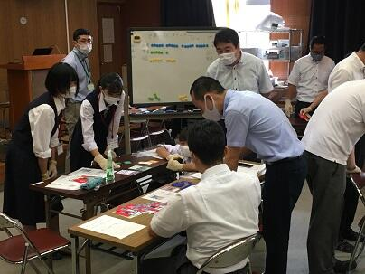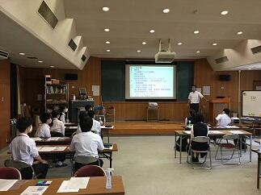
徹底探究基礎講座①


8月2日(日)第1回徹底探究基礎講座高大接続スタート講座がありました。コロナ禍ということもあり、船橋、柏、長生、木更津、市立千葉でオンラインによる同時開催という形で実施されました。本校からは16名が参加し、実験などを通し、研究を行う意義について学び、今後自らがどのように研究をしていくのか想像してもらえたと思います。
SSH講座（数学分野）
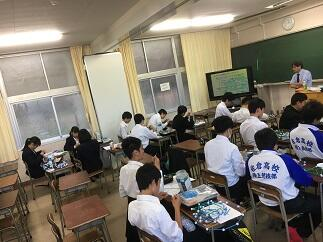

国内サイエンスツアー最終日

 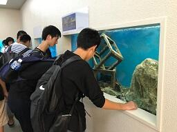
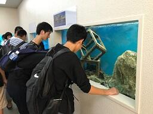
国内サイエンスツアー第２日


国内サイエンスツアー 第１日
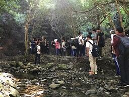

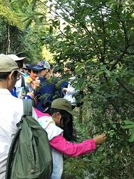
クリスマスレクチャー「有機化学実験講座」
講座内容は、解熱鎮痛剤として使用されているアスピリン（アセチルサリチル酸）をサリチル酸から合成・精製し、合成したものがアスピリンであるかを融点測定や塩化鉄(Ⅲ)溶液による定性試験、三種類の機器分析（MS・IR・NMR）により同定しました。また、コンピュータ上での分子モデリングを行いました。大学の先生やＴＡの学生さんのサポートを受けながら、一人ですべての工程を行い、全員無事にアスピリンを合成できたことを確認することができました。
 | 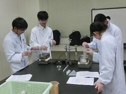 |  |
| 講義 | 合成実験 | 合成実験 |
 |  |  |
| データ分析 | NMR実習 | データ分析 |
 |  |  |
| 融点測定 | IR実習 | 分子モデリング実習 |